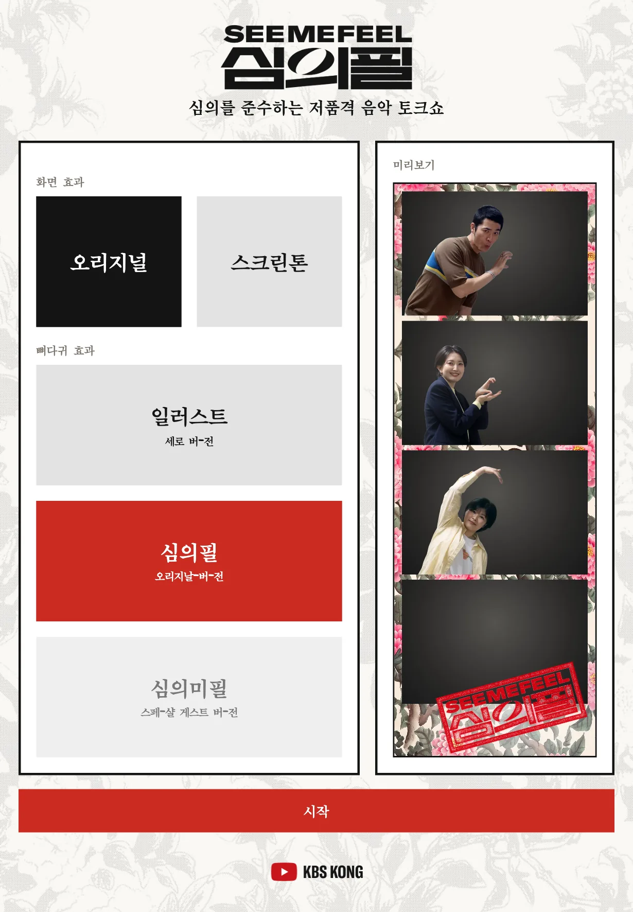
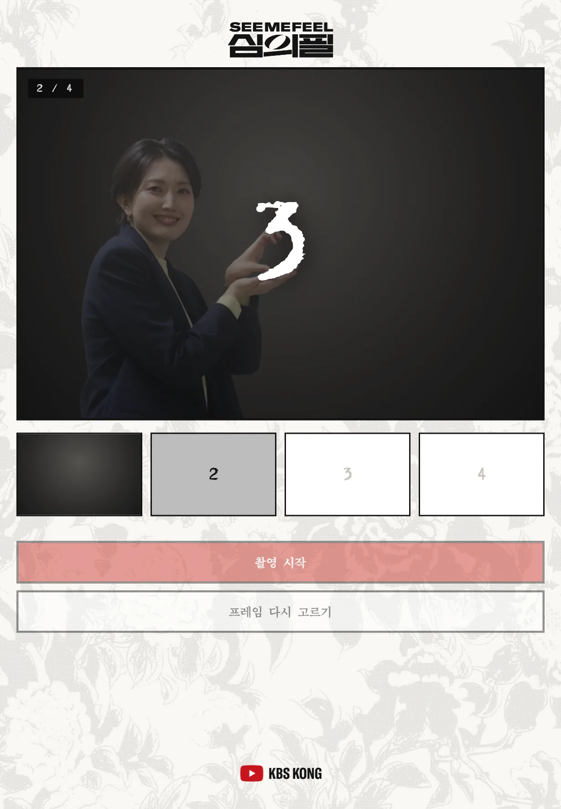
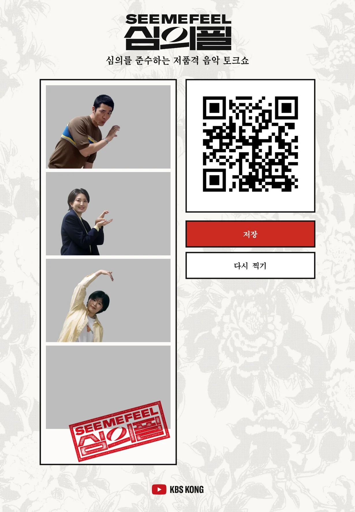

2026년 10월 23일 기준 · 2차 시안
고르기 화면과 촬영 화면을 나눈 C안을 적용했습니다. 버튼과 미리보기가 커졌고, 촬영 화면에서는 카메라가 화면 폭 전체를 씁니다.



촬영이 끝나면 사진이 행사용 저장소에 올라가고, QR 코드를 스캔하면 휴대폰에서 사진이 열리며 저장 버튼으로 내려받을 수 있습니다. 저장 버튼은 아이패드에도 그대로 있습니다.
사용 시 주의사항 QR 코드는 아이패드가 와이파이에 연결되어 있어야 작동합니다. 연결이 끊겨 사진이 업로드되지 않으면 QR 코드가 표시되지 않으며, 이 경우에도 저장 버튼은 정상 동작합니다.
QR 코드와 버튼 아래 공간이 비어 있습니다. 넣고자 하는 마케팅 문구(방송 시간, 유튜브 채널 안내, 해시태그 등)가 있으면 전달해 주시기 바랍니다. 짧은 문구가 적합하며, 전달받는 대로 해당 위치에 반영하겠습니다.
뼈다귀 효과 3종입니다(일러스트 와이드·심의필 스페셜 게스트는 뺐습니다). 사진 영역은 회색으로 비워 두었습니다. 프레임을 클릭하면 크게 볼 수 있고 PNG로 내려받을 수 있습니다.
세로로 세운 아이패드(820×1180) 기준입니다. 카메라 영역만 회색이며, 반투명 출연자 가이드는 실제 동작과 같습니다. 프레임 버튼을 누르면 미리보기가 바뀝니다.
| 기존 (한 열) | A 좌우 2단 | B 위아래 고정 | C 두 화면 | |
|---|---|---|---|---|
| 라이브 카메라 폭 | 514px | ~430px | 560px | 772px (촬영 화면) |
| 완성 미리보기 폭 | 139px | ~255px | ~210px | ~275px |
| START 누를 때 카메라 | 화면 밖 — 스크롤 필요 | 같은 화면 | 항상 위에 고정 | 촬영 화면 전체 |
| 스크롤 | 있음 | 없음 | 없음 (프레임이 늘어도 위·아래 고정) | 없음 |
| 찍기까지 터치 | 1번 | 1번 | 1번 | 2번 (START → 자리 잡고 → 촬영) |
왼쪽에 라이브 카메라·필터·프레임·START, 오른쪽에 완성 미리보기를 세로로 길게. 한 화면에 전부 들어가 스크롤이 없고, START를 누르면 바로 위 카메라에서 카운트다운이 돕니다.
화면 효과
뼈다귀 효과
미리보기
로고와 라이브 카메라를 화면 위에, START를 아래에 고정하고 가운데(필터·프레임·미리보기)만 스크롤되는 카메라 앱 구조. 프레임이 10개가 돼도 카메라와 START는 늘 보입니다.
화면 효과
뼈다귀 효과
미리보기
첫 화면은 고르기 전용: 큰 버튼과 가장 큰 미리보기. START를 누르면 촬영 화면으로 넘어가 카메라가 화면 폭을 다 씁니다. 자리 잡을 시간을 주기 위해 촬영 화면에서 한 번 더 “촬영 시작”을 누릅니다.
화면 효과
뼈다귀 효과
미리보기